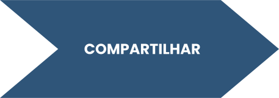
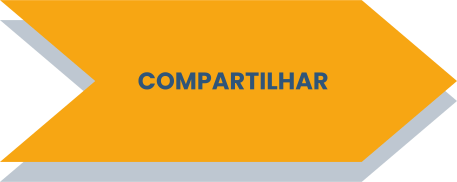
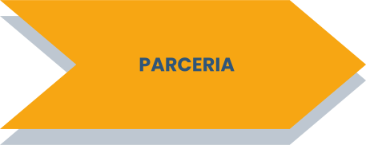
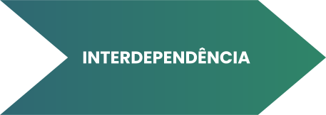
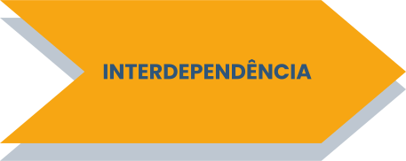

A seguir, apresentaremos alguns aportes
teóricos que podem auxiliar na busca de estratégias e soluções para momentos
desafiantes, evidenciados ao se colocar em prática certas iniciativas, a exemplo da implementação de
reuniões
integradas
em uma UBS.
Os elementos considerados pilares que sustentam a colaboração (D´AMOUR et
al.,
2005) são:





Quando um grupo passa a compartilhar os mesmos objetivos e metas na dinâmica do trabalho, é possível colocar
o
usuário
na centralidade do cuidado, e não os profissionais envolvidos e os processos, como muitas vezes ocorre.
Com isso, estabelece-se a parceria, conceito mais relacionado à atuação propriamente dita, e que impulsiona a
comunicação efetiva, a confiança e o respeito mútuo. Quando isso ocorre, um profissional valoriza e
reconhece o
trabalho
do outro.
Assim, os profissionais reconhecem suas limitações e a necessidade do outro para efetivação de determinadas
ações.
Emerge, então, a interdependência, conceito que explicita a existência de objetivos comuns e a potência do
trabalho em
equipe.
Para que esses elementos se tornem viáveis, é fundamental que haja equilíbrio nas relações de poder, de modo
que
todos
os membros de uma equipe ou entre equipes se sintam empoderados, tornando as relações interprofissionais
saudáveis e
mais sólidas (COSTA, 2017). Tornar as relações mais horizontais possibilita a criação da identidade de
grupo. A
percepção de igualdade entre membros de um grupo pode reduzir preconceitos e favorecer a aproximação entre
participantes
(AMADO; VILELA, 2016).